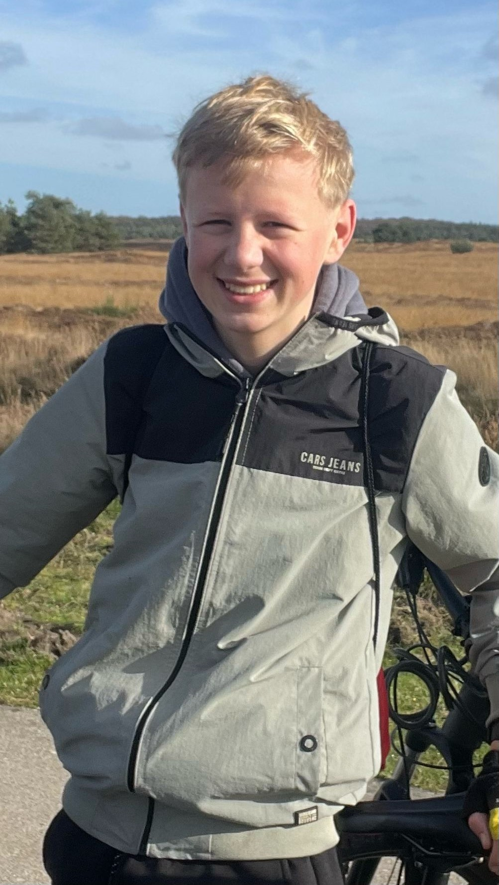

Ik hou van actieve buitensporten, vooral skiën en mountainbiken. Dit zijn sporten die mij zowel fysiek uitdagen als ook de kans geven om in de natuur te zijn.
Over Mij
Leer meer over mijn hobby's en interesses
Mijn Hobby's
Hier een filmpje van mij tijdens het skiën

Een foto van mij tijdens het mountainbiken
Informatie over mij
Ik ben Joost, 15 jaar oud en zit op de GSR in Nieuwerkerk aan den IJssel.

Mijn favoriete muziek
A Better Day
Stargazing